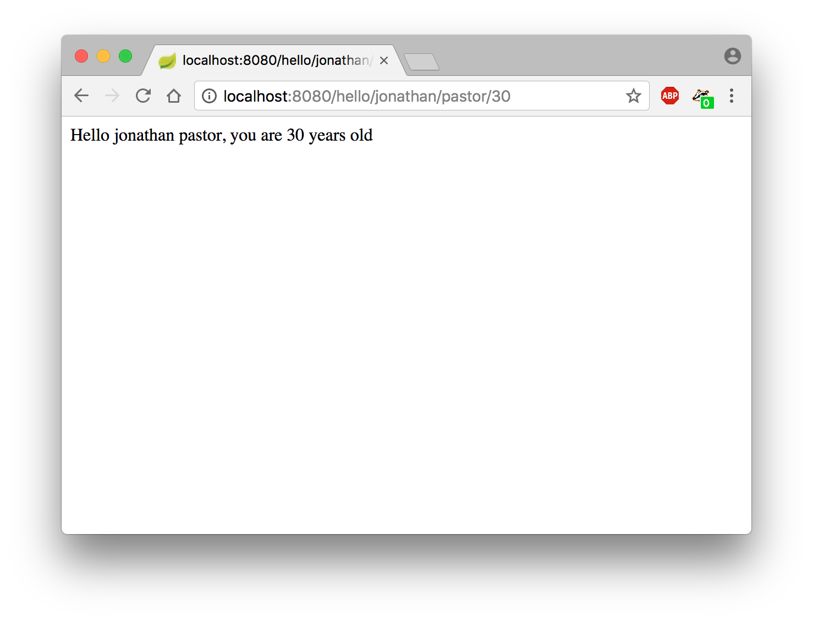
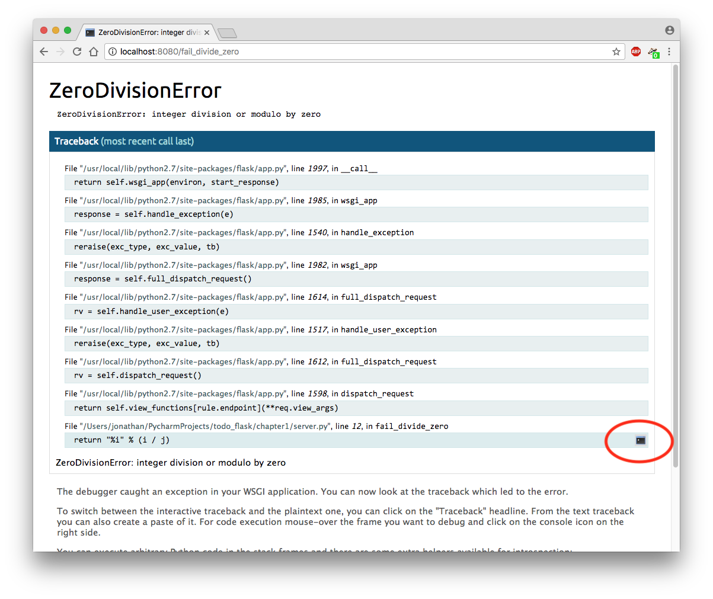
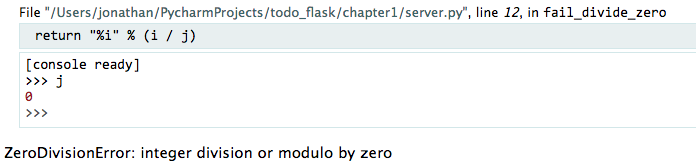

Chapter 1 - First steps with Flask
Creating a Flask application, implementing a view and enabling the DEBUG mode.
I- Creating a Flask application
A simple Flask application is composed of several views, each of them being implemented by a Python function. When a user sends a request to a Flask web application, his request is intercepted by Flask and is routed to the corresponding python view/function. The result of the function call is then used to build the response which is later sent to the user.
We will now create a first Flask application. The first step is to import Flask and to create a Flask application: create a main.py file and add the following lines:
We need now Flask to wait for user requests, otherwise the script will immediately end. Add the following lines in main.py:
Now, run this code and access the web application (on the 8080 port) via a web browser. Doing so should makes you land on an error page as in the following screenshot:

This error message is completely normal, as the web application does not contain yet any view!
In the next Section, you will learn how to develop a view.
II- Implementing a view
Let's implement a simple view that reacts to users' request by displaying "Helloworld". To do so, insert the following code in main.py:
Here several things are important:
- The view is implemented by a python function (hello)
- The view corresponds to the "/" URL (root view)
- The URL is defined by using a Python decorator
- The response (which will be sent to the user) is a python string
Accessing the web application should now display "Hello World!":

A view can also take some arguments: in the following example, we created an hello_name_age view, which takes two parameters:
Which results in the following:
Please note that a type can be specified to any argument of a view. To learn more about typing arguments, please take a look to the Flask documentation
III- Enabling the DEBUG mode
The debug mode enables a Flask application to auto-reload when its source code changes, which is convenient during the development process. To enable the debug-mode, adapt the code of main.py with these two lines and relaunch the Flask application:
Now, each modification of the application's source code will result in a refresh of the application. To test it, change the value returned by the view hello and reload the web browser.
IV- Debugging a Flask application in practice: the web console
First, let's add a new view which is prone to failure:
Accessing the view should lead to an alarming error page, as depicted in the following screenshot. To enable the web console, click on the small console icon (c.f. the red circle):
Warning! You will be asked to enter a PIN code. To find the PIN code, check the logs of the web application for a message looking like in the following screenshot:

Via the web console, you can access to any variables in the scope of the erroneous function:
In the previous screenshot, the value of variable j have been checked, proving that it was the real cause of the error.
V- Summary
The following code summarizes what has been shown in this chapter: